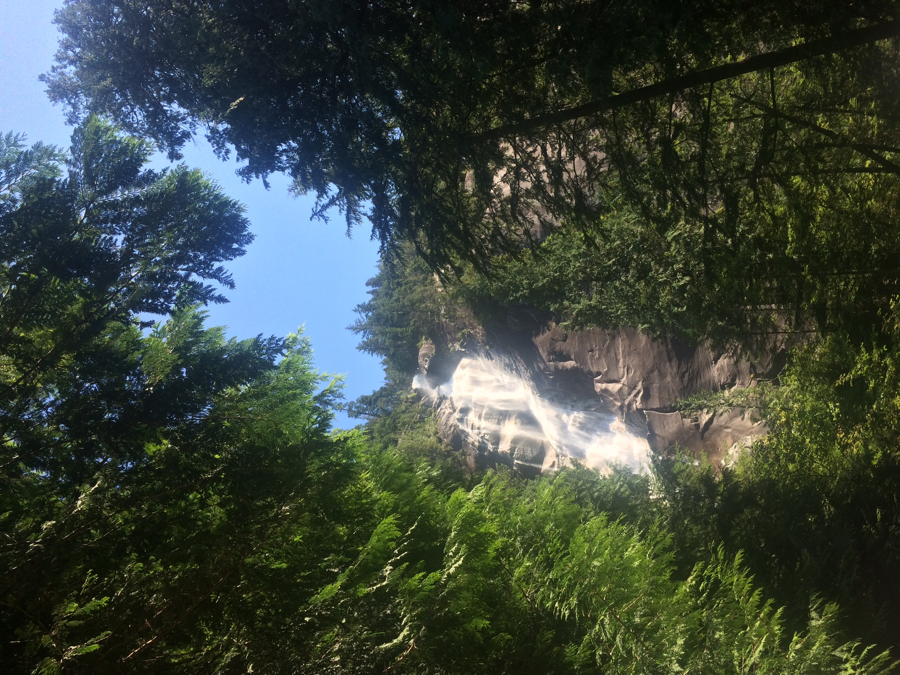
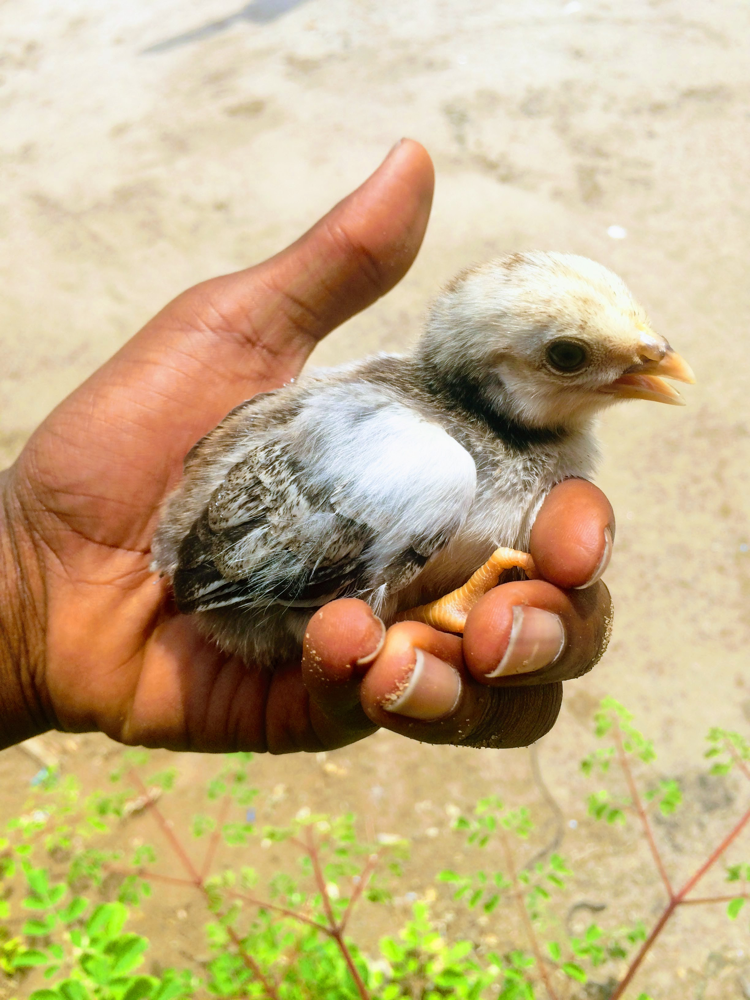

As you know, I’m Gregory Gideon, and as of writing this, I am 19. I was born and raised in the great state of North Carolina. Growing up, I enjoyed watching cartoons, riding my bike, going outside, exploring the vast Wilderness around my house, and reading short stories. From kindergarten to 6th grade, I wasn't the best academically, but that all changed and Middle School; I was told to prepare for high school because it was more serious it would affect my chances of getting into a college, and I began to do better in grades seven to 12th grade. Ultimately, I ended my high school career with a 3.2 GPA, which was enough for me. My family and I have traveled to and from Tanzania, an East African nation near the equator. The rest of my family resides back home in Tanzania so periodically we visit them.
My travels also include:
